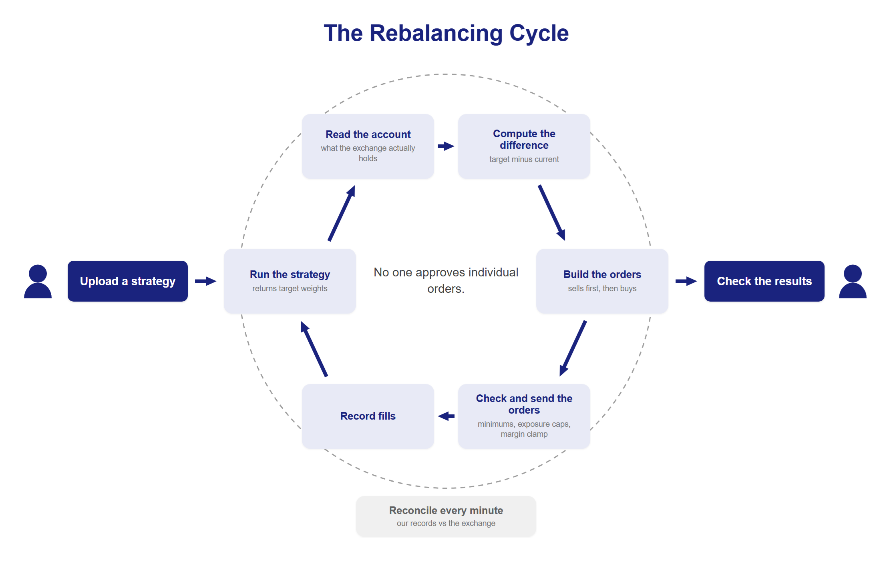

We're Axiom, NeoMatrix's trading systems team. Here's what it takes to build and run one.
Axiom is the team at NeoMatrix responsible for trading systems and infrastructure. Our work splits into two parts: running the automated trading system that moves real money, and continuing to rebuild its core so that one account can run many strategies at once.
This blog is where we write down what that involves: the parts we got right on the first try, the parts that took months and a few wrong guesses, and the parts we still haven't solved.
What the System Does
A user uploads a strategy as code. A strategy is a function that answers one question: what should this account be holding right now, and how much of it? The answer looks something like 40% Bitcoin, 30% Ethereum, the rest in cash.
From there the system takes over: on a fixed schedule, it runs the strategy and gets back the target weights, checks the exchange for what the account actually holds right now, and if the two don't match, builds orders to close the gap: sells first, so there's cash on hand, then buys with whatever that frees up. Nobody approves individual orders, but every order passes automated checks before it goes out. Sizes get rounded down to the increments the exchange accepts, and a new position too small to meet the exchange's minimum is skipped rather than sent. Exposure is capped in two places: a strategy that asks for more than it declared gets scaled back, and the account's overall margin use is clamped before anything is sent. Because each cycle sizes its orders as the gap between the target and what the exchange reports right now, a repeated cycle has nothing new to send once the gap is closed. Anything the exchange refuses, such as an order the balance can't cover, is recorded and raised as an alert. Losses have a limit too: a strategy or portfolio can carry a drawdown limit, and when it's crossed the system stops it automatically and closes its exposure on the next cycle. After that the fills get recorded, and from then on the account gets checked again every minute so what we think is true still matches reality. All of it runs continuously, for every user at once, and a person only touches two parts of it: uploading the strategy, and checking the results afterward.

What's Hard
What ate our time going in was not what we'd braced for.
Crashes we could handle. A crash at least tells you where it died. The failure that doesn't show up anywhere is the one nobody warned us about: no exception, nothing in the logs, the screen showing the same kind of number it always shows, except this time the number is wrong.
We watched this happen once. A query came back with an empty list, no error, and the cleanup process reading that result decided every running session had been abandoned and shut them all down.
The battle-tested quant libraries were mostly built for equities: markets close overnight, there's no trading on weekends, returns get annualized on trading days, order sizes are whole shares. None of that applies to crypto, and none of it is written down anywhere as "this is a stock-market assumption." It's baked into the code, and it doesn't fail loudly. It quietly produces the wrong number.
Run the same strategy against historical data and against a real account and, left alone, the two never agree. Fill timing, fees, slippage, an indicator's warm-up window, minimum order size: get any one of these wrong and the backtest can drift from reality in either direction. Many of these mismatches make the backtest look better than live trading, which can make them harder to notice. Closing that gap is close to half the job.
What We'll Write About
Each post covers one real incident, told roughly the way it unfolded for us: something broke, we didn't immediately know why, we tried a few things that didn't work, and eventually we found the actual cause. If something is still unresolved when we publish, we say so instead of rounding up to a clean ending.
We're not only picking the success stories either. The decisions we reversed and the wrong guesses we made along the way stay in the writeup, because that's usually the part someone hitting the same problem later can use.
What We'll Cover
The system breaks into a handful of layers, and each one has accumulated its own kind of problem. Roughly in this order:
- The live trading engine: the core piece that runs strategies and sends orders. It started as a handful of processes on one server; today it's per-user jobs on Kubernetes, and we'll get into why that changed and what broke along the way.
- The backtest engine. We took an open-source backtester and adapted it to crypto, and enough problems stacked up that we built our own instead. We'll get into what those problems were.
- Every exchange has its own order format, error codes, and fee handling, and the exchange integration layer hides all of that so nothing above it has to think about which exchange it's talking to.
- The data pipeline, where market data and indicators live. Live trading and backtesting need to see the same data, and any gap that opens up has to get backfilled later.
- Results and metrics: the layer that computes what was made and how much risk it took, and the easiest place for a calculation to go quietly wrong.
- Deploys, monitoring, and what happens when something breaks at 3am, all under operations and incident response.
Real cases for each layer, none of which felt interesting while we were living through them, starting with the next post.